Part 1: Migrate the Contoso Expenses app to .NET Core 3
This is the first part of a tutorial that demonstrates how to modernize a sample WPF desktop app named Contoso Expenses. For an overview of the tutorial, prerequisites, and instructions for downloading the sample app, see Tutorial: Modernize a WPF app.
In this part of the tutorial, you will migrate the entire Contoso Expenses app from the .NET Framework 4.7.2 to .NET Core 3. Before you start this part of the tutorial, make sure you open and build the ContosoExpenses sample in Visual Studio 2019.
Note
For more information about migrating a WPF application from the .NET Framework to .NET Core 3, see this blog series.
Migrate the ContosoExpenses project to .NET Core 3
In this section, you'll migrate the ContosoExpenses project in the Contoso Expenses app to .NET Core 3. You'll do this by creating a new project file that contains the same files as the existing ContosoExpenses project but targets .NET Core 3 instead of the .NET Framework 4.7.2. This enables you to maintain a single solution with both .NET Framework and .NET Core versions of the app.
Verify that the ContosoExpenses project currently targets the .NET Framework 4.7.2. In Solution Explorer, right-click the ContosoExpenses project, choose Properties, and confirm that the Target framework property on the Application tab is set to the .NET Framework 4.7.2.
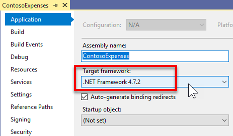
In Windows Explorer, navigate to the C:\WinAppsModernizationWorkshop\Lab\Exercise1\01-Start\ContosoExpenses folder and create a new text file named ContosoExpenses.Core.csproj.
Right click on the file, choose Open with, and then open it in a text editor of your choice, such as Notepad, Visual Studio Code or Visual Studio.
Copy the following text to the file and save it.
<Project Sdk="Microsoft.NET.Sdk.WindowsDesktop"> <PropertyGroup> <OutputType>WinExe</OutputType> <TargetFramework>netcoreapp3.0</TargetFramework> <UseWPF>true</UseWPF> </PropertyGroup> </Project>Close the file and return to the ContosoExpenses solution in Visual Studio.
Right-click the ContosoExpenses solution and choose Add -> Existing Project. Select the ContosoExpenses.Core.csproj file you just created in the
C:\WinAppsModernizationWorkshop\Lab\Exercise1\01-Start\ContosoExpensesfolder to add it to the solution.
The ContosoExpenses.Core.csproj includes the following elements:
- The Project element specifies an SDK version of Microsoft.NET.Sdk.WindowsDesktop. This refers to .NET applications for Windows Desktop, and it includes components for WPF and Windows Forms apps.
- The PropertyGroup element contains child elements that indicate the project output is an executable (not a DLL), targets .NET Core 3, and uses WPF. For a Windows Forms app, you would use a UseWinForms element instead of the UseWPF element.
Note
When working with the .csproj format introduced with .NET Core 3.0, all the files in the same folder as the .csproj are considered part of the project. Therefore, you don't have to specify every file included in the project. You must specify only those files for which you want to define a custom build action or that you want to exclude.
Migrate the ContosoExpenses.Data project to .NET Standard
The ContosoExpenses solution includes a ContosoExpenses.Data class library that contains models and interfaces for services and targets .NET 4.7.2. .NET Core 3.0 apps can use .NET Framework libraries, as long as they don't use APIs which aren't available in .NET Core. However, the best modernization path is to move your libraries to .NET Standard. This will make sure that your library is fully supported by your .NET Core 3.0 app. Additionally, you can reuse the library also with other platforms, such as web (through ASP.NET Core).
To migrate the ContosoExpenses.Data project to .NET Standard:
In Visual Studio, right-click the ContosoExpenses.Data project and choose Unload Project. Right-click the project again and then choose Edit ContosoExpenses.Data.csproj.
Delete the entire contents of the project file.
Copy and paste the following XML and save the file.
<Project Sdk="Microsoft.NET.Sdk"> <PropertyGroup> <TargetFramework>netstandard2.0</TargetFramework> </PropertyGroup> </Project>Right-click the ContosoExpenses.Data project and choose Reload Project.
Configure NuGet packages and dependencies
When you migrated the ContosoExpenses.Core and ContosoExpenses.Data projects in the previous sections, you removed the NuGet package references from the projects. In this section, you'll add these references back.
To configure NuGet packages for the ContosoExpenses.Data project:
In the ContosoExpenses.Data project, expand the Dependencies node. Note that the NuGet section is missing.
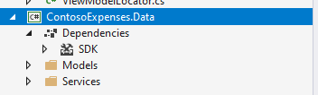
If you open the Packages.config in the Solution Explorer you will find the 'old' references of the NuGet packages used the project when it was using the full .NET Framework.
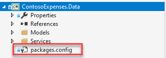
Here is the content of the Packages.config file. You will notice that all the NuGet Packages target the Full .NET Framework 4.7.2:
<?xml version="1.0" encoding="utf-8"?> <packages> <package id="Bogus" version="26.0.2" targetFramework="net472" /> <package id="LiteDB" version="4.1.4" targetFramework="net472" /> </packages>In the ContosoExpenses.Data project, delete the Packages.config file.
In the ContosoExpenses.Data project, right-click the Dependencies node and choose Manage NuGet Packages.
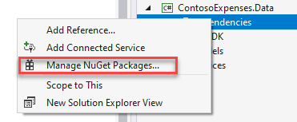
In the NuGet Package Manager window, click Browse. Search for the
Boguspackage and install the latest stable version.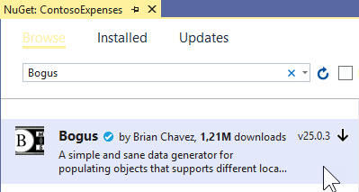
Search for the
LiteDBpackage and install the latest stable version.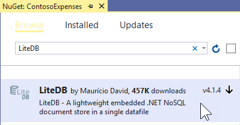
You may be wondering where these list of NuGet packages is stored, since the project no longer has a packages.config file. The referenced NuGet packages are stored directly in the .csproj file. You can check this by viewing the contents of the ContosoExpenses.Data.csproj project file in a text editor. You will find the following lines added at the end of the file:
<ItemGroup> <PackageReference Include="Bogus" Version="26.0.2" /> <PackageReference Include="LiteDB" Version="4.1.4" /> </ItemGroup>Note
You may also notice that you're installing the same packages for this .NET Core 3 project as the ones used by .NET Framework 4.7.2 projects. NuGet packages supports multi-targeting. Library authors can include different versions of a library in the same package, compiled for different architectures and platforms. These packages support the full .NET Framework as well as .NET Standard 2.0, which is compatible with .NET Core 3 projects. For more info about the differences .NET Framework, .NET Core and .NET Standard, see .NET Standard.
To configure NuGet packages for the ContosoExpenses.Core project:
In the ContosoExpenses.Core project, open the packages.config file. Notice that it currently contains the following references that target the .NET Framework 4.7.2.
<?xml version="1.0" encoding="utf-8"?> <packages> <package id="CommonServiceLocator" version="2.0.2" targetFramework="net472" /> <package id="MvvmLightLibs" version="5.4.1.1" targetFramework="net472" /> <package id="System.Runtime.CompilerServices.Unsafe" version="4.5.2" targetFramework="net472" /> <package id="Unity" version="5.10.2" targetFramework="net472" /> </packages>In the following steps you'll .NET Standard versions of the
MvvmLightLibsandUnitypackages. The other two are dependencies automatically downloaded by NuGet when you install these two libraries.In the ContosoExpenses.Core project, delete the Packages.config file.
Right-click the ContosoExpenses.Core project and choose Manage NuGet Packages.
In the NuGet Package Manager window, click Browse. Search for the
Unitypackage and install the latest stable version.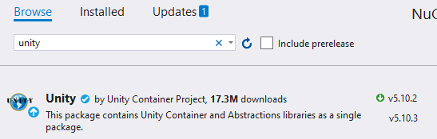
Search for the
MvvmLightLibsStd10package and install the latest stable version. This is the .NET Standard version of theMvvmLightLibspackage. For this package, the author chose to package the .NET Standard version of the library in a separate package than the .NET Framework version.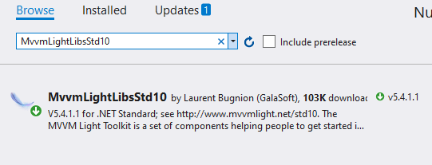
In the ContosoExpenses.Core project, right-click the Dependencies node and choose Add Reference.
In the Projects > Solution category, select ContosoExpenses.Data and click OK.
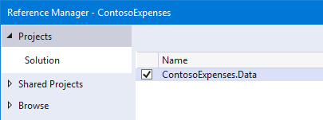
Disable auto-generated assembly attributes
At this point in the migration process, if you try to build the ContosoExpenses.Core project you'll see some errors.
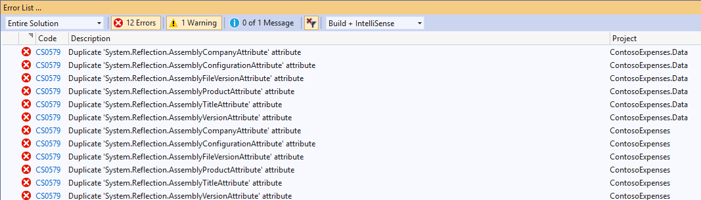
This problem is happening because the new .csproj format introduced with .NET Core 3.0 stores the assembly info in the project file rather than the AssemblyInfo.cs file. To fix these errors, disable this behavior and let the project continue to use the AssemblyInfo.cs file.
In Visual Studio, right-click the ContosoExpenses.Core project and choose Unload Project. Right-click the project again and then choose Edit ContosoExpenses.Core.csproj.
Add the following element in the PropertyGroup section and save the file.
<GenerateAssemblyInfo>false</GenerateAssemblyInfo>After adding this element, the PropertyGroup section should now look like this:
<PropertyGroup> <OutputType>WinExe</OutputType> <TargetFramework>netcoreapp3.0</TargetFramework> <UseWPF>true</UseWPF> <GenerateAssemblyInfo>false</GenerateAssemblyInfo> </PropertyGroup>Right-click the ContosoExpenses.Core project and choose Reload Project.
Right-click the ContosoExpenses.Data project and choose Unload Project. Right-click the project again and then choose Edit ContosoExpenses.Data.csproj.
Add the same entry in the PropertyGroup section and save the file.
<GenerateAssemblyInfo>false</GenerateAssemblyInfo>After adding this element, the PropertyGroup section should now look like this:
<PropertyGroup> <TargetFramework>netstandard2.0</TargetFramework> <GenerateAssemblyInfo>false</GenerateAssemblyInfo> </PropertyGroup>Right-click the ContosoExpenses.Data project and choose Reload Project.
Add the Windows Compatibility Pack
If you now try to compile the ContosoExpenses.Core and ContosoExpenses.Data projects, you'll see that the previous errors are now fixed but there are still some errors in the ContosoExpenses.Data library similar to these.
Services\RegistryService.cs(9,26,9,34): error CS0103: The name 'Registry' does not exist in the current context
Services\RegistryService.cs(12,26,12,34): error CS0103: The name 'Registry' does not exist in the current context
Services\RegistryService.cs(12,97,12,123): error CS0103: The name 'RegistryKeyPermissionCheck' does not exist in the current context
These errors are a result of converting the ContosoExpenses.Data project from a .NET Framework library (which is specific for Windows) to a .NET Standard library, which can run on multiple platforms including Linux, Android, iOS, and more. The ContosoExpenses.Data project contains a class called RegistryService, which interacts with the registry, a Windows-only concept.
To resolve these errors, install the Windows Compatibility NuGet package. This package provides support for many Windows-specific APIs to be used in a .NET Standard library. The library will no longer be cross-platform after using this package, but it will still target .NET Standard.
Right-click on the ContosoExpenses.Data project.
Choose Manage NuGet Packages.
In the NuGet Package Manager window, click Browse. Search for the
Microsoft.Windows.Compatibilitypackage and install the latest stable version.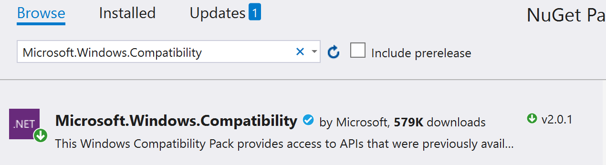
Now try again to compile the project, by right clicking on the ContosoExpenses.Data project and choosing Build.
This time the build process will complete without errors.
Test and debug the migration
Now that the projects are building successfully, you are ready to run and test the app to see if there are any runtime errors.
Right-click the ContosoExpenses.Core project and choose Set as Startup Project.
Press F5 to start the ContosoExpenses.Core project in the debugger. You'll see an exception similar to the following.
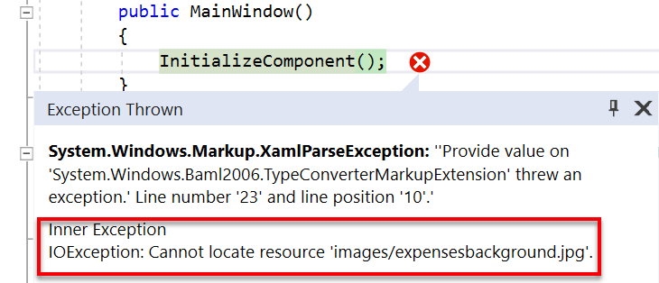
This exception is being raised because when you deleted the content from the .csproj file at the beginning of the migration, you removed the information about the Build action for the image files. The following steps fix this issue.
Stop the debugger.
Right-click the ContosoExpenses.Core project and choose Unload Project. Right-click the project again and then choose Edit ContosoExpenses.Core.csproj.
Before the closing Project element, add the following entry:
<ItemGroup> <Content Include="Images/*"> <CopyToOutputDirectory>PreserveNewest</CopyToOutputDirectory> </Content> </ItemGroup>Right-click the ContosoExpenses.Core project and choose Reload Project.
To assign the Contoso.ico to the app, right-click the ContosoExpenses.Core project and choose Properties. In the opened page, click drop-down under Icon and select
Images\contoso.ico.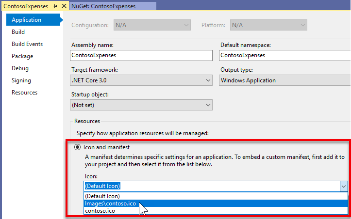
Click Save.
Press F5 to start the ContosoExpenses.Core project in the debugger. Confirm that the app now runs.
Next steps
At this point in the tutorial, you have successfully migrated the Contoso Expenses app to .NET Core 3. You are now ready for Part 2: Add a UWP InkCanvas control using XAML Islands.
Note
If you have a high resolution screen, you may notice that the app looks very small. You'll address this problem in the next step of the tutorial.